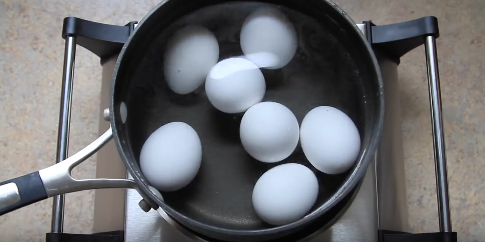
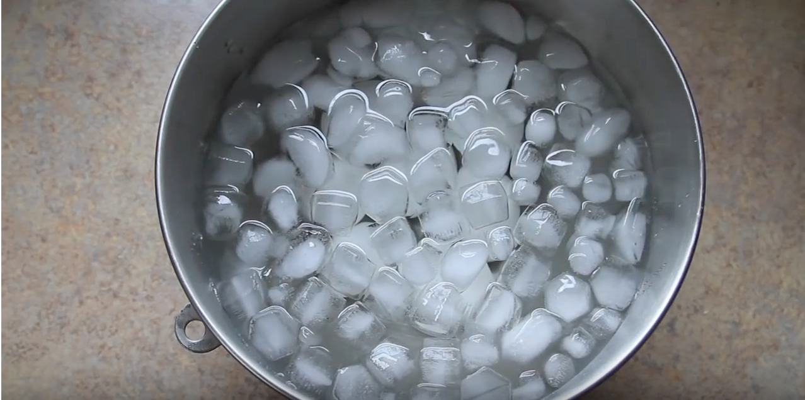
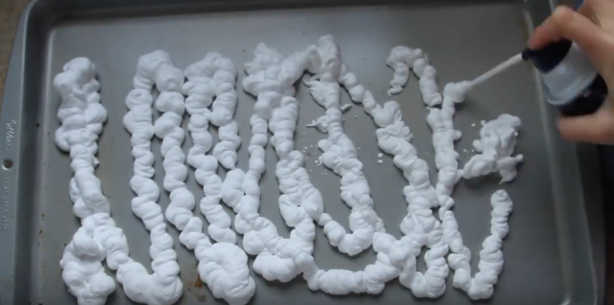
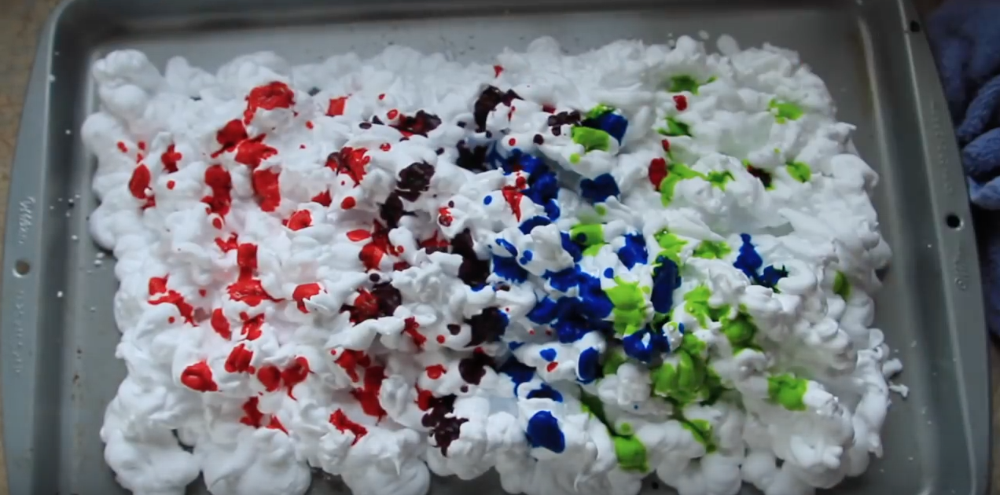
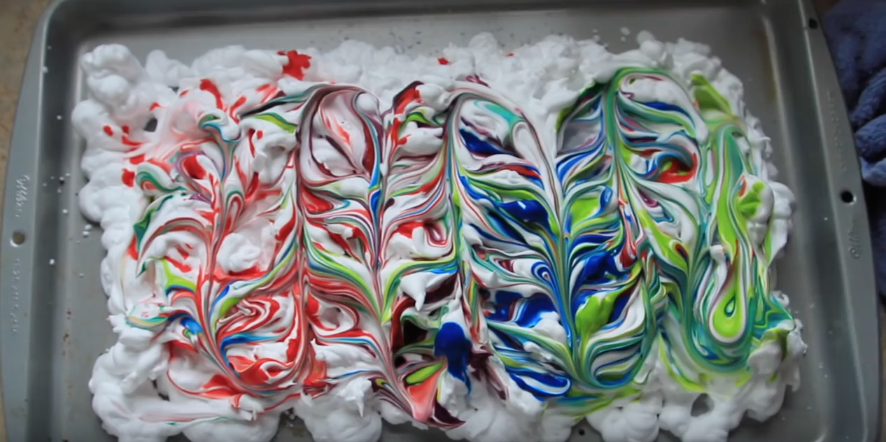
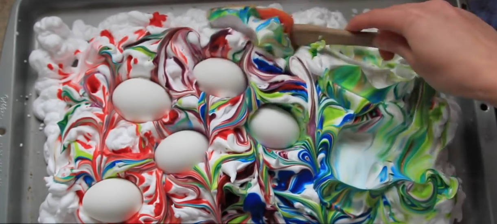
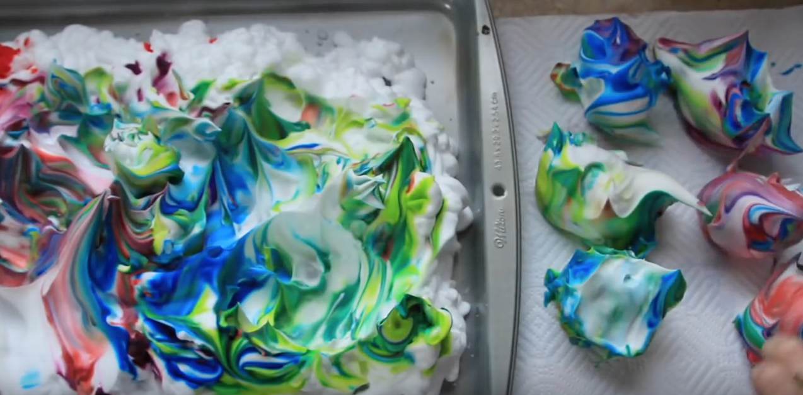

Step 1:
First, you are going to boil water and then place eggs into the pot. After 3 minutes you will reduce to the water to a simmer and cook for another 5 minutes.
Step 2:
Next, you are going to place eggs into a bowl of ice and let sit for 15 minutes. This process lets the process of peeiling the shell off the easier.
Step 3:
After the eggs have sat in the ice water you can remove them from the ice and dry them thoroughly.
Step 4:
Once you have gotten the eggs out and dryed, spray ancookie sheet with shaving cream and make sure to completely cover it.
Step 5:
Add food coloring to the shaving cream (use more than one color for better results).
Step 6:

You can use a knife or toothpick to swirl the dye around creating a pattern in the shaving cream.
Step 7:
You can then gently place the eggs into the shaving cream. Make sure to place them all over so you can get the different colors.
Step 8:
Using a spoon, cover the eggs with shaving cream that is already around them and let them sit for 20 minutes.